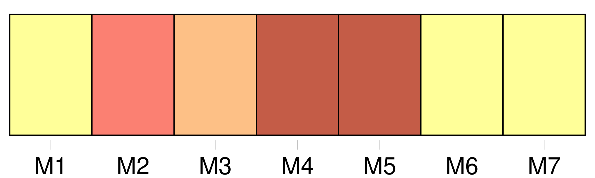
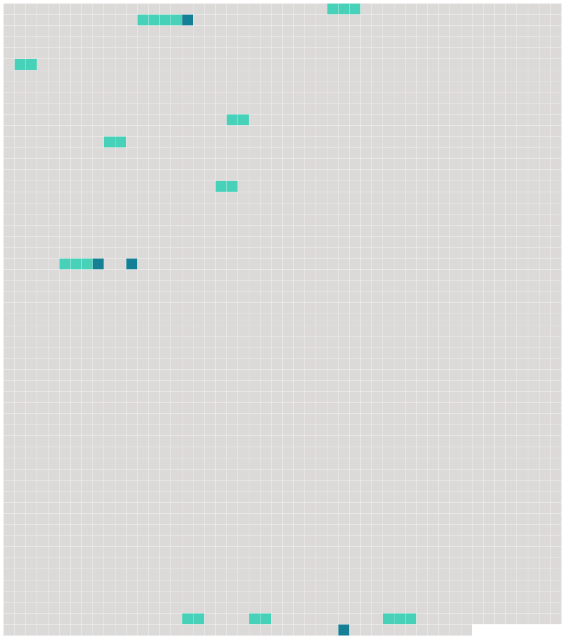

Longueur nb maillons : 14 mentions |
  |
Son nom commun vient de l'arabe zarāfah, mais l'animal fut anciennement appelé camélopard, du latin camelopardus, contraction de camelus ( chameau ) en raison [du long cou] et de pardus ( léopard ) en raison des taches recouvrant son corps.
Après des millions d'années d'évolution, la girafe a acquis une anatomie unique avec [un cou particulièrement allongé] [qui] lui permet notamment de brouter la cime des arbres. [6 phrases]
Description [10 phrases] Ses caractéristiques physiques, notamment la longueur de ses membres et de [son cou] , font qu'elle est considérée par la NASA comme le modèle idéal pour étudier l'effet de la gravité sur la circulation sanguine. [2 phrases] Dans les artères [du cou] , tout un réseau de muscles annulaires aide à hisser le sang jusqu'au cerveau. [5 phrases] Contrairement à une idée répandue, les girafes possèdent des cordes vocales mais elles n'émettent que très rarement des sons, se reposant davantage sur la vision que sur l'audition pour communiquer via par exemple des postures et des mouvements [du cou] et de la tête. [14 phrases]
Son galop particulier est facilité par [son long cou] [qui] balance et [crée] l'équilibre, grâce à un petit muscle spécial qui le tire en avant. [65 phrases] En 1809, Lamarck pensait qu'à force d'allonger [le cou] , elle avait transmis [ce trait] à sa descendance. En 1872, Darwin pensait que [son long cou] était dû à une sélection liée aux périodes de famines, où un ou deux pouces en plus faisaient la différence et permettaient de survivre.
L'hypothèse de la sélection sexuelle est aussi avancée, les mâles se battant à coup de [cou] ou au contraire se caressant ( comportement appelé necking ). |
 |
La ressource peut être téléchargée sur la page Ortolang
Si vous avez des questions ou vous voyez des erreurs, merci d'envoyer un mail à silvia.federzoni89@gmail.com
Site développé par S. Federzoni (contact)